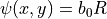
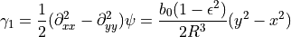

SIE
Set the potential profile to the type SIE.
In set_lens.c:set_dynamics(), the impact parameter is computed as such:
with arcsec / (km/s)^2. To obtain this value,  is converted to 648,000 arcsec.
is converted to 648,000 arcsec.
The ellipticity of the potential ε is proportional to the ellipticity of the mass distribution
Circular SIS has .
A circularised radius is defined as .
The projected effective lensing potential in direction of Newtonian potential  is
is
where  is the angular diameter distance.
The SIE lensing potential writes
is the angular diameter distance.
The SIE lensing potential writes

Program e_grad.c computes the first derivatives of this potential
In file e_grad2.c, the 2nd derivatives of the gradient are computed in 2D in the amplification frame, and rotated afterwards back to the reference frame.
The second derivatives of the lensing potential are
From the 2nd derivatives, the convergence is computed in g_mass.c:computeKmass().
The shear is computed in g_shear.c.
